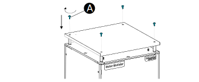

Attach the Rain Roof Attach and tighten the distant bolts (C) and washer (D). Place the roof (B) on top of the distance bolts. Attach and tighten the screws (A) in the roof.  Attach the earthing cable that connects the rain roof and cabinet roof.